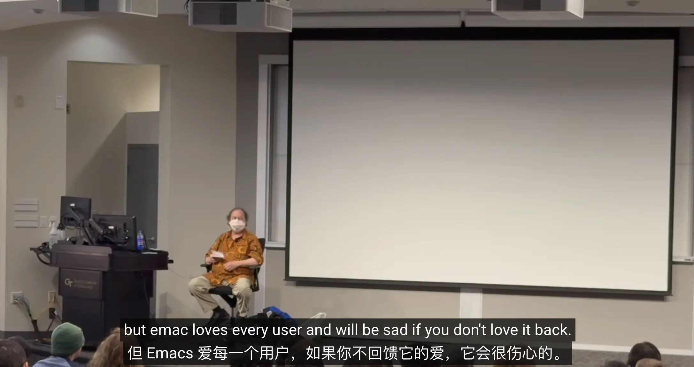

如何上手 Emacs
TL;DR
上手 Emacs 的建议：
- 要对 Emacs 感兴趣，愿意花些时间折腾和调试，需要一些耐心
- 从成熟的配置起步，熟悉 Emacs 的使用
- 从零开始重新配置 Emacs，了解每一行的配置的作用
我是看 Chen Bin 的教程 一年成为 Emacs 高手 入门的，这篇教程最大的帮助是让我从 purcell 的 Emacs 配置 开始上手 Emacs，这个配置很成熟，让我感受到了 Emacs 的乐趣。
我很快把 Emacs 用在了平时工作中，一开始可能比较多摩擦，效率会下降一点，但硬着头皮去使用一段时间后就很顺手了。
Purcell 的配置我用了很久，后面断断续续阅读 purcell 的配置，每次都有新发现，也开始添加一些自己的配置；直到最近，我才重新整理了配置文件，了解每一行配置的作用，形成了 我的配置。
我用 Emacs 来写博客、阅读 RSS、记录笔记、写代码、记账、记录待办事项……应该还会继续用很久。
为什么要选择 Emacs
可以看看：
- Emacs as a computing environment by Protesilaos Stavrou
- Computing in freedom with GNU Emacs by Protesilaos Stavrou
- Emacs is sexy!
- Emacs Elevator Pitch - Only Emacs can save your soul
- 谁是你的 Emacs 领路人？
- 说说使用 Emacs 的动机
Emacs 上手是存在一些难度的，它不是开箱即用的，需要去写一些配置，使得它用起来更趁手。
首先需要对 Emacs 感兴趣，愿意花些时间折腾和调试配置。刚开始的时候可能用起来会磕磕碰碰，觉得哪里都不顺手，你需要有足够的兴趣支撑自己坚持一段时间，去熟悉它。
接着，阅读一遍 Emacs 内置的 Emacs Tutorial (C-h t)，了解常用的操作，例如打开文件、编辑内容、移动指针、保存文件，退出编辑器等。
如果你想强迫自己用键盘操作，但是身边又没有一只粘人的猫帮你抓住鼠标，你可以试试 disable-mouse.el。
然后，了解 Emacs 中如何查看 Info，看一遍 Info Help (M-x Info-help)
了解如何在 Info 中移动和搜索；了解 describe-function, describe-key, describe-variable, describe-mode 等，这些方法可以方便地查看相关文档。
推薦閲讀
之后，找一个比较成熟的配置，例如 purcell 的配置，先用一段时间，可能几天或几个月，甚至一年。阅读别人的配置，看看包含什么，怎么用的，都去尝试一下。通过别人成熟的配置，了解在 Emacs 中可以做什么事情、有什么好用的功能，去熟悉 Emacs 的使用。
可以尝试的配置
这些是相对通用的配置，用的人也比较多：
- purcell/emacs.d（推荐）
- 如果你对 Purcell 感兴趣的话，可以看看：2015-01-21 Emacs Chat - Steve Purcell
- spacemacs
- Doom Emacs
- Emacs Prelude
- Centaur Emacs
这些是相比上面的要简单一些，可以作为搭建起点：
这些是 Emacs 高手的配置，可以参考学习：
- Protesilaos Stavrou's Emacs configuration（详细的文档描述）
- Sacha Chua's Emacs configuration（详细的文档描述）
- redguardtoo/emacs.d
- manateelazycat/lazycat-emacs
只用 Emacs 内置包的配置：
这个阶段，要「逼迫」自己去用 Emacs，平时用编辑器做什么，现在就用 Emacs 尝试完成一样的事情，或许过程中会有一些摩擦和困难，想办法去克服它（LLM 会是你的好帮手）。
如果你不知道可以用 Emacs 做什么
你可以试试：
- 用 magit 完成 git 相关操作
- 用 denote 或者 Org-roam 记笔记
- 用内置的 org-mode 做代办事项、Getting Thing Done(GTD)。这方面可以看看 OrgMode tutorial | Rainer König
- 用 Emacs 来写 Markdown、写博客
- …
一段时间之后，你大概已经能够熟练使用 Emacs 了，也对自己喜欢用的功能、常用的功能有了解。
这个时候就可以了解一下 Elisp 了，建议先阅读一遍 Emacs Lisp Elements，对 Elisp 形成一个全局了解；然后看看 Emacs Info 里的 Emacs Lisp Intro，进一步了解 Elisp；之后就可以开始自己写点 Elisp、阅读源码、在错误中学习了。
当你碰到问题的时候
多利用 describe-* 相关方法，例如 describe-function ；或者搜索 Emacs Lisp Manual 进一步了解相关语法；还可以借助网络搜索、论坛、LLM。
Emacs 里的一些搜索文档的方法也很有用，例如：
shortdocfind-libraryinfo-apropos
如果你英文阅读比较吃力
- 对于 Emacs 中的文档，可以尝试安装一些 Emacs 中的翻译工具，见 Translation In Emacs
- 对于浏览器上的文档，可以试试 Immersive Translate、或者 Kagi Translate
排查 Emacs 启动时就报错的问题
用命令 emacs --debug-init 启动 Emacs，Emacs 会在启动时报错告诉你报错位置和调用堆栈。
排查 Minibuffer 的报错
执行 M-x toggle-debug-on-error 命令，再次执行你触发错误的操作，Emacs 会告诉你报错位置和调用堆栈。
排查是否配置文件引起的问题
- 用
emacs -Q -l test.el启动 Emacs test.el这个文件需要你手动创建，文件的内容之包括需要测试的插件和配置- 如果
emacs -Q启动没有问题，请使用二分注释法排查自己的配置代码
需要注意的是，如果 *.el 文件内容是正确的，但是 Emacs 行为总是不对，请检查是否有老版本的 *.elc 或 *.eln 文件没有删除。
排查 Emacs 卡顿的问题
用 profiler-start 命令来启动性能分析程序，重现卡顿的操作，用 profiler-report 命令来找出性能瓶颈的地方。
排查输出消息的命令
在 Minibuffer 看到某种 message 但没有报错，可以通过在 ielm 中执行代码 (setq debug-on-message "xxx") 。当 Emacs 输出 xxx 时， Emacs 就会启动 debugger ，告诉我们哪行代码输出了消息。通过分析堆栈信息，你可以定制 Emacs 的行为，避免输出不必要的消息。
调试小技巧
- 确认正则对不对，善用
M-x re-builder - 确认当前命令，善用
M-x interaction-log(interaction-log) - 查询光标处编码、字体、颜色等信息，善用
M-x describe-char
其他：
- Emacs: confirm package bugs with –init-directory
- 定制某个函数的行为，但却不想改插件源代码，请善用 advice；加载某个模式时执行某些代码，请善用 Hooks。关于 Hooks 和 Advice，推荐阅读：Hooks and the advice mechanism
通过养成持续的阅读习惯以及利用 Emacs 提供的试错便利，人们可以在实践中逐步学会 Elisp。只需每次迈出一小步，就能慢慢学会。这就是每个 Emacs 用户都可以学习 Emacs Lisp 编程，或至少更好地理解他们的工具在做什么的方式。
这也体现了自由软件承诺的实现：每个人，而不仅仅是专业程序员，都能从中受益。在我看来，这正是 Emacs 体现 GNU 项目关于软件自由目标的原因：它将这些目标融为一体，并付诸实践，全都凝聚在一个强大的程序之中。
对 Elisp 有一些大致了解后，可以开始写自己的配置了，我的建议是从一个空白的 init.el 开始，一行一行地添加。
关于如何组织配置文件，可以参考：
哪怕是将现在用的配置重新写一遍，也要从零开始写，过程中了解每一行配置的作用和目的，你可能需要查阅很多包的文档了解它们的功能，可能需要经常询问 LLM 了解一些配置的含义。
如果你是从成熟配置开始用 Emacs 的，你可能不知道 Emacs 默认是什么样的、一些你习以为常的功能又是通过什么配置控制的，从零开始可以让你对此有所了解。此外，过程中也可以找到一些自己用不到的配置，从而精简配置。
虽然比较费时、费劲，但这么做可以加深你对配置的理解，并且让这些配置真正属于你。
从头开始写，也有一些小建议：
- 使用
use-package去管理包的安装，会更简洁方便 - 考虑先配置好 minibuffer、补全、一些编辑工具包，方便编写
进行到这里，你大概已经有一份独属于你的 Emacs 配置，算是入门 Emacs 了。
下一步做什么
接下来可以继续探索：
- 找找别人的配置，看看有没有好用的功能，借鉴一下
继续学习 Elisp
- 多练习，在错误中一点点搞懂 Elisp，尝试用 Elisp 解决一些自己的需求，例如：
- 有时间可以读一读 Emacs Lisp Manual，
如果 Elisp 不熟练，也可以借助 LLM。要搞明白 LLM 是如何实现的，从中学习 Elisp 的编写。
- 逛逛论坛、博客，了解 Emacs 的动态：
Happy hacking, Emacs ♥ you!

关于 Emacs，Richard Stallman 说: "Emacs Love every user and will be sad if you don't love it back."
你可以在 Emacs China 上进行讨论，其他可以看看的：
- Mastering Emacs
- Emacs From Scratch
- 【新手教程】一个面向产品经理的 Emacs 新手教程
- 21 天学会 Emacs（2022 Edition）
- Emacs 自力求生指南
- A noob friendly start by Alice
- How to Learn Emacs: A Hand-drawn One-pager for Beginners / A visual tutorial by Sacha Chua
- 一些 Emacs 内置功能的介紹：
- Batteries included with Emacs by Karthinks
- More batteries included with emacs by Karthinks
- Even More Batteries Included with Emacs by Karthinks